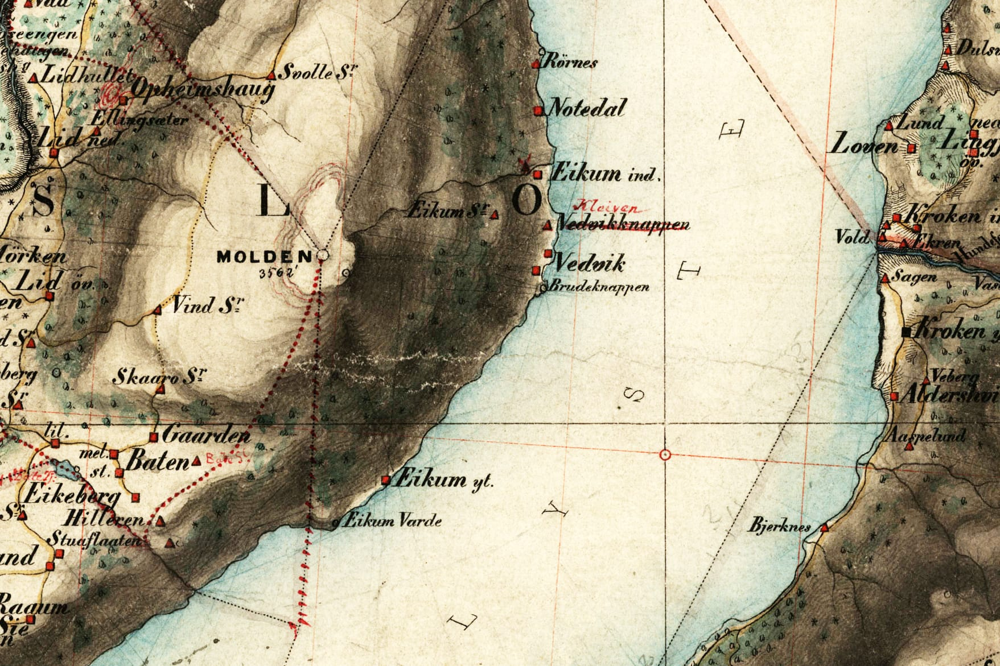

Maps

An old map from 1866.
Ytre Eikjo has here the old name Eikum Ytre, and you can see it in the center-lower part of the map.
Eikjastrondi extends from Ytre Eikjo to Notedal in the upper-right.
In the center-left to lower-left, you can see Skaaro, Hilleren, and Stuaflaaten that some time in history has been shieling (seter) under Ytre Eikjo.
Norwegian Mapping Authority/Public domain
⁴.